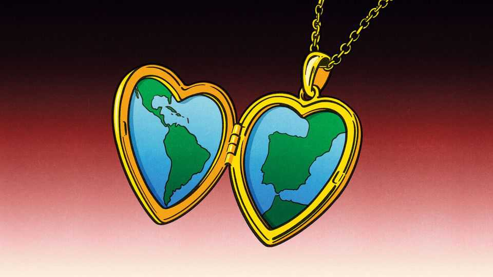

Donald Trump’s tantrums are an opportunity for Spain
Can it get on better with its former colonies?

Oct 29th 2026
Getting Latin American leaders into one room is a feat. Getting them to agree on anything is tougher still. Only one president from the region turned up to the Ibero-American summit, a biennial gathering of leaders from Spain, Portugal and Latin America, when it was held in Ecuador two years ago—and that was the host. There are hopes Spain will do better when it holds this year’s pow-wow, in Madrid, on November 4th and 5th. The organisers are aspiring to get as many as 18 heads of state, or their deputies, to attend.
The timing is propitious. Donald Trump increasingly treats Latin America as the United States’ backyard. Though a wave of ostensibly Trump-aligned presidents have taken office, the region remains keen to hedge against his unpredictability by diversifying trade. Links with China are important, but also problematic. “I’ve never seen more desire for Europe,” says a veteran Latin American diplomat.
Spain has ties to the region that neither of the world’s superpowers can replicate. More than 4m people who were born in Latin America now live in Spain, many having arrived in the past decade. Back in the 1980s and 1990s Spain’s transition to democracy was a model for some of its former colonies. Felipe González, prime minister from 1982 to 1996, became an adviser to governments in the region. In 1991 Spain and Mexico convened the first Ibero-American summit in Guadalajara, laying foundations for a 22-member community loosely inspired by the Commonwealth of once British-ruled countries.
Spain’s influence has since waned. Spanish companies remain important investors in the region. But they have stepped back even as Latin America has strengthened ties with China. Some diplomats complain that Spanish governments have grown less interested. The current prime minister, Pedro Sánchez—who has called a general election for November 29th—wants to improve things.
That will require a change in approach. Mr Sánchez rubs along best with governments of the left. Ties with right-wing leaders have been fraught. In 2024 Spain temporarily withdrew its ambassador from Buenos Aires after Javier Milei, Argentina’s president, insulted Mr Sánchez’s wife in a speech. Spain has yet to accept the ambassador sent to Madrid by Colombia’s new president. Lawmakers complain the emissary has said rude things about Mr Sánchez on social media.
Yet even a shared worldview has not guaranteed good relations. On paper Mr Sánchez and Claudia Sheinbaum, Mexico’s left-wing president, ought to get on like churros and chocolate. But Ms Sheinbaum’s predecessor and mentor, Andrés Manuel López Obrador, picked a quarrel with Spain over its colonial past and demanded an apology from its king for the conquest. Spain’s foreign ministry reacted defensively; the dispute worsened when Mexico did not invite the king to Ms Sheinbaum’s inauguration in 2024.
Ms Sheinbaum has proved more willing to separate historical grievances from present-day interests. She has good reasons for doing so, notes Rafael Ch of Signum Global Advisors, a consultancy. The United States is Mexico’s biggest trading partner, but Mr Trump’s erratic policymaking is loosening ties. With economic growth sluggish, Ms Sheinbaum has little to gain from permitting a diplomatic quarrel with Spain to drag on.
Delcy Rodríguez, Venezuela’s interim president, is likely to attend the meet-up in Madrid. Ms Rodríguez governs with Mr Trump’s backing, so Latin Americans are unlikely to make a fuss about her showing up. But it would be controversial in Spain. Opponents have long accused the Spanish left of indulging Venezuela’s grim regime. It would be refreshing—and good for Spain’s image—if the summit were to call loudly for the country’s democratic transition to speed up.
Those who gather in Madrid will discuss AI, disaster preparedness and mutual recognition of educational qualifications such as degrees. That kind of stuff will seem low-key. But other regional organisations, such as the Community of Latin American and Caribbean States and the Organisation of American States, are at a low ebb. So perhaps the most important thing is getting together at all. ■